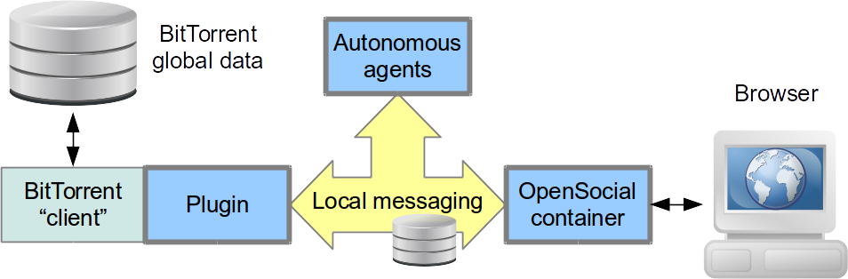

- Popular social networking platforms
- Centralized: algorithms (recommendation etc.) have full access to data
- Web based: easy access, across devices
- But... there are some “buts”
- Risk of mass surveillance
- Lack of control and risk of censorship
- Risk of privacy leak
- Availability and reachability during crisis
- High cost of ownership, for multimedia services
- Ads or revenue generating data usage
Preserving Privacy in a P2P Social Network
Monica Mordonini, Agostino Poggi, and Michele Tomaiuolo
Ingegneria dell'Informazione, UniPR.it
Motivations
Distributed platforms
- Federated systems
- Diaspora, StatusNet
- Users can suffer attacks to popular pods
- Custom peer-to-peer systems
- Freenet, PeerSoN, LotusNet, Safebook, Persona, Life Social
- In some cases, a single node can still host various users
- Lack of...
- Systems based on popular P2P protocols
- Open source, workable implementations
Design of Blogracy
- Modular design, orthogonal solutions for different aspects
- Data formats, file sharing protocols
- Identity, integrity, confidentiality, anonymity
- Open source, available on GitHub for experimentation

Basic formats and protocols
- OpenSocial
- W3C standard for social activities, based on JSON
- Recent social activities saved in a local file
- The file can include profile information
- ... and a list of followees
- BitTorrent
- File sharing
- P2P, fully distributed
- Kademlia, Distributed Hash Table
- All nodes mantain information about file availability
- Without servers/trackers
Identity and security
- Key based identity
- Each user is identified by his/her public key
- Each user has an associated file
- Social db: profile, followees and activities
- DHT for mapping:
user_id→file_hash
- Signed activities for integrity
- JSON Web signature
- End to end encryption for confidentiality
- Attribute-Based Encryption
Resource sharing

Updating the followees’ feeds

Node churn
- In P2P, some users connect and others disconnect, continuously
- But in BitTorrent, downloading a resource corresponds to sharing it
- If a user has enough followers, they contribute to make his/her messages available
- Also when the original message source is offline
Simulation
- Simulations limited to the network of nodes directly following a certain source
- Usually, this is the sharing community
- Two kinds of nodes
- Nodes connecting quite occasionally (three times a day, 15 minutes in total)
- More stable nodes, connecting for 8 hours a day (avg BitTorrent session; collaborative work)
- A follower is online at the instant when a new message is published?
- Yes: optimal reception time == instant of publication
- Otherwise: the first time the follower goes online again
Results of simulations

- Ok with 120 followers, 10% stable nodes → 5 min delay
- Difficult with 40 followers
- 30% stable node → 10 min delay
- 5% stable nodes → 8 hours delay
Long tail of delays
- Most messages are received virtually immediately
- But for few messages, no seeds are available
- In these cases, quite long delays are suffered
Implementation, results
Implementation over BitTorrent
- Plugin for Vuze (fka Azureus)
- Java-based BitTorrent client
- Object-oriented, extensible
- Web application
- Embedded Jetty web server
- Communications through JMS
- ActiveMQ
- Messages exchanged also with the browser
- Real time updates
- Publish/subscribe channels based on Vuze DHT
Web based interface

Push vs. pull propagation
- Polling: unnecessary delays and traffic
- Pushing: not always appropriate; node churn in P2P
- Need to strike a balance between polling/pushing mechanisms
- Blogracy: pushing mechanism based on DHT
- Publish/subscribe on multiple channels
- Potentially, a channel for each user
- Users interested in a channel, share a torrent
- The shared hash is obtained by the name of the channel
- Messages are sent directly to all online subscribers
Pushing update notifications

- Testing: 20 nodes over the PlanetLab testbed, constantly online
- All nodes participate to a common publish/subscribe channel
- 90% of messages are received in (less than) half a minute
Polling full files, at startup
- Testing: 20 nodes over the PlanetLab testbed, constantly online
- 90% of messages are received in (less than) 3.5 minutes
- A polling cycle every two minutes...
- accounts for 1 additional minute, on average
Attribute-Based Encryption
- Cyphertext-Policy Attribute-Based Encryption (Bethencourt, Sahai and Waters, 2007)
- Certified attributes grant access rights to users
- Attribute authority, a trusted third party
- Blogracy: targeted broadcast
- Attributes issued directly by content creators to acknowledged followers
- Access policy for each message (or social activity)
- Each message disclosed to different intended receivers
- Attribute credentials in their content creator's feed, encrypted with the follower's public key
Multi-authority protocols

Features of various Multi-Authority ABE schemes
No concrete scheme available for usage in P2P scenarios
Re-certification
- “Best News” certifies that Alice is among its own reporters (attribute certificate)
- Alice shows the certificate to Carol
- Carol trusts “Best News” for that kind of attributes
- Carol issues her own certification to Alice, as a “Best News reporter”
- Alice can then access Carol's messages targeted to “Best News reporter”
Network-level anonymity
- ISP can easily deanonymize users
- Proxies and mix networks for network-level anonymity
- Tor for network anonymity
- Focused on web browsing through outproxies
- Supports internal hidden services...
- But discourages public file sharing
- Darknet-based file sharing is virtually nonexistant
- I2P
- Experimental, small community
- Not focused on browsing the web
- Supports internal hidden services...
- And encourages file-sharing among darknet peers
Performance over I2P

- Times are much longer (3.5x)
- In line with other measurements, about web browsing with Tor and I2P
Conclusion
- Anonymity, confidentiality, direct control over posts
- Scalability, especially for multimedia files
- Working prototype, for testing and further development
- Modular architecture: BitTorrent backend, web interface, standard formats
- Orthogonal solutions for different aspects
- Experimental verification, for identifying workable conditions
<Domande?>
Monica Mordonini, Agostino Poggi, and Michele Tomaiuolo
Ingegneria dell'Informazione, UniPR.it
http://blogracy.net/